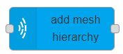

add mesh hierarchy

Usage
Adds a collection of meshes to the Where, with the specified hierarchy.
Hierarchy tree
On the top of the editor the hierarchy tree can be built.
Add childClick on a element to select it and then click on theAddbutton to add a child mesh to it.Remove a meshClick on a element to select it and then click on theRemovebutton to remove it from the tree.Rename the elementClick on a element to select it and then click on theRenamebutton to rename the element on the tree.
Configuration
Edit confguration of a mesh.
Click on the selected mesh and edit the configuration of the given mesh.
Mesh Configuration
Node idID of MaxWhere node to be set.Mesh fileName of the mesh file to usePositionThe Node's position in 3d scene. Default is {x: 0.0, y: 0.0, z: 0.0}.Orientation{x, y, z, w} - Node's orientation in 3d scene. Default is {w: 1.0, x: 0.0, y: 0.0, z: 0.0}Scale{x, y, z} | Number - The Node's scale along axes. Default is {x: 1.0, y: 1.0, z: 1.0}.PhysicalautophysicalWhether to generate a simple physical shape for the Node.raycastWhether the physical is pointable by mouse.
Node Configuration
Create onSets whether the mesh is created oninitializationorinputInitializationThe mesh is added to the Where when the flow is started/deployedInput: A mesh is added when the node gets an input. The inputmsg.payloadcontent can overwrite properties of the mesh to create.Hereyou can see the options.SaveIf turned on the runtime changes made to theposition,orientationandscaleare saved when theCtrl + Skey combination is used. Currently only supported ifCreate onis set toInitialization.Display nameName of the node in the editor.
Input
If Create on is set to input it adds a mesh hierartchy and msg.payload overwrites provided options.
Output
After mesh hierarchy is created a message is added to msg.payload.